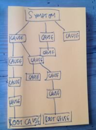

Steps for the Activity
- This activity can be really helpful for a campaign or basket to reframe the issues you’re working on. It can be helpful to have people who don’t work on the issue everyday as part of the group to be able to ask intelligently naive questions that can very insightful. So try to get a cross functional group of people together, not just those you work with - between 5 and 7 works best.
- As a lighthearted introduction to the concept of Infinite Why, you might like to play this film to the group.
- Define what the problem or symptom is that your campaign is trying to address. Be as a specific as you can in the way you articulate the problem. It helps if someone who is familiar with the area briefs the group but then that person needs to step back and let the group come up with ideas. It’s easy to get lost if you get too much into the detail.
- Start with your problem statement and ask the question "Why?" as many times as you need to until you get to a place that feels like a root cause. It’s likely that there will be several different initial causes when you work backwards from the symptom but start with one and follow it back to the root. Then choose another one and see where that takes you. You will end up with a chart that looks something like the image to the right.
- Once you have reached the level of a root cause, pick one to focus on and spend some time brainstorming ideas for campaigns you could run that would address it. It is likely to be a very different kind of campaign to the ones we’re used to and that’s ok.
- What would an anti-corruption campaign look like for example?
- Who might we partner with on this?
- How could we used our environmental credentials here?
- How might we weave the symptoms we’re used to campaigning on into this story?
Materials
- Markers
- Flip charts
- Imagination
Discussion
Encourage an initial discussion about the challenge - what are the symptoms we see, what is the currently problem that your campaign is trying to address. Get the person most familiar with the work to brief the others but then make sure they step back and let the rest of the group develop ideas and solutions. Try and move through the mapping of symptoms to root causes quite quickly. it’s easy to get bogged down in the detail so you need to keep the pace up. You want to spent a decent amount of time looking at ways of addressing the root cause.
Attributions
Thanks to BuzzFarmers for the image used in the header icon